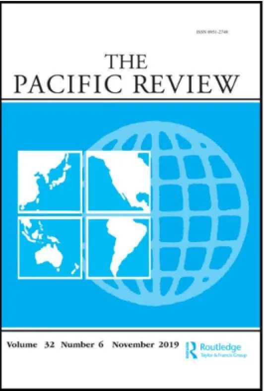

收录于合集

作品简介
【作者】 Rebecca Strating，墨尔本拉筹伯大学政治、媒体与哲学系政治与国际关系高级讲师，澳大利亚国际事务研究所出版物《澳大利亚展望》的委托编辑。主要研究领域为印度- 太平洋的海洋争端和澳大利亚的外交政策。
【编译】 黄慧彬（国政学人编译员，复旦大学国务学院研究生）
【校对】 石雨宸
【审核】 邵良
【排版】 苏语涵
【美编 】黄竹音
【来源】 Strating, Rebecca. “Norm contestation, statecraft and the South China Sea: defending maritime order.” The Pacific Review (2020): 1-31.
期刊简介

《太平洋评论》（The Pacific Review）是太平洋地区研究的主要平台，作为跨学科期刊，其宗旨和目标为打破研究领域之间以及学术界、新闻界、政府和商界之间的壁垒。据Journal Citation Reports统计,2019年该刊的影响因子为1.633，在区域研究类SSCI期刊中排名11，在国际关系类SSCI期刊中排名第35。
规范竞争，治国方略和中国南海： 维护海洋秩序
Norm contestation, statecraft and the South China Sea: defending maritime order
Rebecca Strating
摘要
自2009年以来，中国南海日益成为一个高度可见的“规范竞争”的舞台，其中关于主权和海洋权利的争端象征着区域安全秩序以及支撑这一秩序的制度、规则和法律之间的竞争。有一个问题从中孕育而生，即作为规范捍卫者的区域大国如何采取安全措施以维护其偏好的秩序愿景。本文针对澳大利亚这一区域大国进行案例研究，探讨美国的关键盟友在南海规范竞争中的利益及实现方法。作为一个区域大国，澳大利亚采用了规范性的方法维护海洋秩序。尽管堪培拉方面对中国在南海的行动加强了措辞力度，强调维持“基于规则的秩序”的重要性，但它的安全措施仍保持了常规、“一切照常”的性质。这种做法旨在维护海洋规则的同时避免北京方面的经济反击，反映出了一个夹在两个大国中间的中等国家更广泛的战略困境。
文章导读
2009年以来，南海复杂而多层次的争端已呈现出日益重要的全球意义。中国在南海的行动引起了区域内国家的关注，美国则认为中国的行动威胁了其所谓的“航行自由”，并“破坏了全球海洋秩序”。在大国竞争的局势下，南海成为了“规范竞争”的舞台，动摇着当前的海洋秩序。
正如维纳所说，“规范存在于实践中，而实践通常是‘规范的生产者’”。如果规范是从国家的集体行动和理解中产生的，那么非大国也能够通过它们的实践对规范产生影响。澳大利亚采用了一种规范性的方式维护海洋秩序，包括区域内的常规行动、双边和多边外交、公共外交叙事，以及通过争端解决机制处理问题和遵守《联合国海洋法公约》。尽管澳大利亚在外交政策表述上与中国针锋相对，但在实践中却保持了例行的、“一切如常”的方式来维护规范。这一策略悖论也反映出了作为中等国家夹在两个大国之间的更广阔的战略困境。
01
规范竞争和南海 （Normative contestation and the South China Sea）
本文将规范竞争定义为针对现有规范的杂乱或有序的挑战，包括不遵守、辩护性陈述和抗拒法律决定。 西方国家对中国的定位带有一定偏见，南海问题则在西方国家构建中国形象的范式中扮演着特殊的角色。
受到挑战的规范主要是1982《联合国海洋法公约》（UNCLOS），该公约于1994年修订，也经常被称为“海洋宪法”，是一种复杂的安全规范。 《联合国海洋法公约》的谈判虽然取得了显著成就，但也突显出一些矛盾，如许多新国家、后殖民国家和发展中国家在看待海洋管辖权方面与海洋大国具有根本分歧。这些关于海洋规范基本构成的争论在当前的争端中也有所体现。
自20世纪初以来，对南海各项海洋权益的竞争性诉求成为了东亚政治格局的特征之一。2009年起这些争端的政治影响力加强。就中国而言，中国在南海的权利诉求中表现出“战略上的模棱两可”的态度，为其主张提供了回旋的空间。同时这也令人疑惑：在中国的国防规划中，南海到底是一个特殊的区域，还是在西太平洋等其他地区扩大影响力的跳板？
在这种情况下，非大国是如何理解规范竞争的？它们如何采取安全措施维持或动摇规范？国家对于规范的影响力并不相同。然而，像澳大利亚这样的区域大国在美国捍卫和倡导现有区域秩序过程中的地位日益上升。美国希望其盟友及伙伴能够积极为区域安全做出贡献，尤其是在维护“基于规则的秩序”方面。在美国的盟友及伙伴寻求维护它们所偏好的安全规范时，它们有什么样的选择？当捍卫规范与其他优先考虑相冲突时它们该何去何从？下文将对这些问题作出解答。
02
澳大利亚在南海的利益（Australia’s interests in the South China Sea）
澳大利亚在南海的利益倾向于用安全、经济或者政治术语来表达。 2016年之前，澳大利亚并不愿意参与南海争端。但近年来澳大利亚的国防政策表现出了对于该地区的不确定性和紧张局势，以及南海争端可能会破坏地区秩序的担忧。 澳大利亚2016年国防白皮书中声称澳大利亚在南海的安全利益是“维护和平与稳定、对国际法的尊重、畅通无阻的贸易以及航行和飞越自由”。
毋庸置疑，对澳大利亚安全利益来说最大的挑战是两个大国在东南亚的军事冲突。中美间的大国冲突将给澳大利亚带来典型的联盟风险。美国若介入南海冲突，可能会对澳大利亚造成压力，澳大利亚可能被迫加入美国领导的针对其最大贸易伙伴的干预行动。但美国在南海是否存在核心利益以及是否愿意冒险捍卫其所谓利益和盟友，这些都存在疑问。
贸易也是澳大利亚在南海争端中的重要利益关切。 根据国防白皮书，“澳大利亚近三分之二的出口都要经过南海，包括主要的煤炭、铁矿石和液化天然气”，“稳定的、基于规则的区域秩序对确保对澳大利亚进入一个开放、自由和安全的贸易体系至关重要，并对澳大利亚尽量减少其利益的胁迫和不稳定风险的行动产生直接影响”。
尽管澳大利亚的政策强调了航行和飞越自由在国际法中的重要性，但其政策表述未能区分商业和军事航行自由。在《联合国海洋法公约》的谈判期间，世界上具有强大海军的国家主张12海里的领海和公海走廊，以给本国海军最大的回旋余地，并行使“对海洋的控制力”。澳大利亚不是一个全球海洋大国。因此，如何解释其对军事航行自由规范的维护？对澳大利亚来说，如何理解航行自由与联盟政治和对美国主导秩序的持续支持紧密相关。任何限制美国在印太作战能力的努力都可视为对其战略利益的威胁。
南海问题还与“外国干涉澳大利亚民主”这一更加广泛的政治关切联系在一起。主张对南海问题采取更加“中立”态度的政治家可能会招致批评，称他们受到了不正当的影响，甚至会被卷入争议之中。有两位政客不同程度地在南海问题上发表了亲华言论，二人与中国之间的联系招致了广泛的质疑，其中的一位甚至被迫退出参议院。澳大利亚公共领域内的这些问题关联在一起，强化了群众的认识，即北京试图影响澳大利亚的公众舆论和南海政策。尽管没有证据表明澳大利亚的南海政策受到影响，澳大利亚仍坚定了对中国在南海行动的反对态度。
03
澳大利亚在南海采取的规范性方法（Australia’s normative approach to the South China Sea）
虽然澳大利亚的利益倾向于用物质（如经济和安全）术语来表达，在南海问题上，它仍采取了一种规范性的做法。澳大利亚一贯认为有关权利诉求和海洋权益的争议应该通过国际法解决，包括公认的谈判和仲裁的方法。
在言辞上，澳大利亚的政策制定者将海洋秩序的规范维度置于权力维度之上。然而，学者们提到，澳大利亚对“基于规则的秩序”的热切使用，突显出了其行动和言辞之间的差距。事实上，澳大利亚在南海问题上的叙述表明了它对中国改变美国领导下秩序的担忧。正在出现的基于权力的秩序可能会导致“权力”等同于“权利”的认知。对此澳大利亚采取了规范性的方法以维持地区安全秩序。与大国相比，稳定合法的制度和可预测的行为模式更有益于在物质实力方面处于弱势的国家。
在澳大利亚看来，北京在南海的主张“挑战了海洋规范的持久性和可行性”。这成为一个潜在的问题，因为《联合国海洋法公约》为澳大利亚提供了可观的物质利益。维护海洋规则不仅仅是挽救美国占主导的地区现状，它还与保障澳大利亚领土、边界和主权等核心战略防卫利益有关。海洋秩序的规范性维度对于理解澳大利亚对威胁的认知以及物质利益和观念利益之间的关系十分重要。那么，在规范竞争的时期，像澳大利亚这样寻求捍卫规范的地区大国会采用什么方法呢？
04
在挑战中捍卫规范（Defending norms under challenge）
迄今为止，澳大利亚在南海捍卫海洋规范的能力一直受到与中国密切的贸易关系的限制。下文将分析澳大利亚在南海问题上的治国方略，以强调其捍卫现有海洋秩序的可能性和局限性。
（1）通过“常规化”维护规范（Norm preservation through ‘routinisation’）
关于澳大利亚是否应该加入航行自由行动(FONOPs)这一问题存在很多争论。澳大利亚的讨论倾向于将航行自由行动理解为军舰可以在中国宣称的人工地物（artificial features）的12海里范围内航行，而这在中国看来是侵犯主权的行为。澳大利亚虽然接受美国推行的美国式航行自由行动的权利，但自身并不主张这种权利。这突显了澳大利亚政策中行动和言辞之间的差距。
澳大利亚的海军行动是表演性的和常规性的。虽然近年来澳大利亚在南海的动作频率有所加快，但其行动政策很大程度上侧重于常规化，采取“一切照常”的做法，致力于维持其日常参与的活动。 常规化主要的好处有：第一，巩固国际规范；第二，避免地区的进一步动荡；第三，在维护海洋规范的同时避免引在经贸领域的损失。这些行动强化了规范作为明确的行为标准，也加强了海洋空间使用的可预测性。
然而，一个地区大国在维护规范方面所能做的是有限的。对一些人来说，对现状的新挑战需要采取新的方式来应对。虽然航行自由行动和联合巡逻仍保留为澳大利亚未来的政策选择，但它更偏好延续其习以为常的演习，而不是可能不受北京欢迎的新举措。
（2）区域外交和行为准则（Regional diplomacy and the code of conduct）
东南亚是澳大利亚外交和国防政策考虑的优先区域，被称为印度-太平洋的心脏。澳大利亚领导人一贯强调东盟的中心地位，并利用东亚峰会(East Asian Summit)和东盟地区论坛(ASEAN Regional Forum)等地区多边架构，倡导其在地区稳定和符合国际法的争端解决进程方面的利益。
尽管澳大利亚已认识到加强合作的必要性，并公开表示支持东盟国家和中国就“南海行为准则”进行谈判，但其在开展公共外交的同时强调寻找符合现有国际法和规范的争端解决策略的重要性。澳大利亚明确强调，如果“南海行为准则”不符合现行国际法规定的义务和权利，其将被视为违反澳大利亚的利益。澳大利亚官员与“准则”参与各方已协商决定，在双边和多边环境下共同倡导这些利益。
尽管东盟成员国在南海问题上存在分歧，它们仍希望寻求对澳大利亚的做法施加影响。当东盟国家与中国产生利益冲突时，澳大利亚并不倾向于偏袒任何一方，而是表现出了对中国在南海主张的避险倾向。
（3）言行一致（Aligning rhetoric and action）
尽管澳大利亚的公共外交已表明，它有意维持美国主导的地区秩序，但这种说法也被视为一种阻挠中国在南海维护主权主张的努力。2016年，在中国拒绝接受南海仲裁庭裁决后，澳大利亚表明了对中国的反对态度。
北京对此作出了回应，指责澳大利亚虚伪，引用澳大利亚与东帝汶长期存在的帝汶海油气资源争端作为例证。东帝汶与澳大利亚多次就帝汶海争端进行协商，但签署的条约仍旧无法彻底解决问题。澳大利亚在2004年谈判期间暗中监视东帝汶的消息被披露后，问题进一步恶化。
2016年，东帝汶启动了世界上第一个联合国强制调解程序，以帮助解决争端。澳大利亚对其管辖权提出质疑，并将其与中国对菲律宾提起的仲裁程序的反应相提并论。澳大利亚的最初立场在国内外压力下逐渐难以维持，最终双方于2018年签署了新的帝汶海条约。
澳大利亚在帝汶海争端中的行动挑战了有关堪培拉倾向于在法律规则基础上处理国际关系的说法。 在帝汶海的例子中，澳大利亚显然是较为强大的国家。但作为一个区域大国，它有责任确保国际法仍然是各国主张和保护其权利的合法手段。在澳大利亚自身的遵守情况仍存疑的情况下，这一事件反映出强调以规则为核心的叙述的局限性。
05
结论
本文以澳大利亚的南海政策为例，探讨区域大国在应对海洋争端时的局限性和可能性，旨在了解区域大国在规范竞争中如何寻求捍卫现有规范。
对于像澳大利亚这种夹在安全和贸易大国之间的区域国家来说，制定安全措施以有效维护海洋规范是困难的。 对澳大利亚来说，最重要的问题在于如何在维护海洋规范的同时避免中国的反制。澳大利亚选择采用规范性的方法，其目的是在不激怒其主要挑战者中国的同时维护其所谓的规范秩序。然而，规范性方法也有局限性:行动和言辞上的差距使澳大利亚被指责为徒有其表。
澳大利亚的立场反映了其在制定应对中国崛起的政策方面存在的更广泛的问题。地区大国必须应对多种不确定性。虽然连续性和常规化是澳大利亚主要做法，但发生了重大变化的帝汶海政策体现了强调规则的叙述如何迫使国家调整其长期推行的现实政治方法以解决具体问题。因此，南海争端对域外主权声索国的影响，应被解读为与一系列更广泛的安全和经济挑战密不可分。
译者评述
不同于以往将南海问题视为安全利益之争的观点，本文将南海问题视为海洋秩序规范之争，南海成为了规范竞争的舞台。在这一舞台当中，如今占据主导地位的是美国领导下的以《联合国海洋法公约》为核心的基于规则的秩序，在崛起国的战略定位下，南海问题离不开对中美战略大博弈甚至是建立统一连贯的海洋秩序观点和话语体系的考量。[1]两个大国的竞争已上升到软实力之争，蔓延到海洋领域。在这个框架之下，夹在两大国之间的区域国家该何去何从？本文将澳大利亚作为案例进行研究，探讨澳大利亚在南海问题中作为一个区域大国，但非利益声索国，是如何认知及捍卫其利益的。
海洋秩序规范的竞争不同于权力之争，因为各国捍卫的不仅是自身的可见利益，更是自己所偏好的对于秩序规范的理解。而由于规范是依靠国家的集体行动和理解产生和维持的，那么就算不是实力最为强大的国家，也会对规范的巩固和动摇产生影响。对于澳大利亚来说，南海问题中不涉及其切身利益。南海问题对它的各方面利益，包括安全、经济和政治方面的利益的关联，都是潜在的。或者说在它看来得到了现有海洋秩序规范的保证。因此，在海洋秩序规范之争中，它的首要利益就是捍卫当前由美国领导的海洋秩序。
如今，澳大利亚在南海问题中的地位上升，美国也助推了这一趋势，希望其盟友在南海问题上多做贡献，澳大利亚也自视为规范捍卫者，在言辞上对中国在南海的主张多有抨击。然而，澳大利亚所采取旨在捍卫海洋秩序的规范性方法却显得有些无力。在规范竞争中使用规范性方法捍卫秩序显得自然而然，但一方面，澳大利亚事实上是抱着不破坏与中国贸易关系的期待，其言辞上的激烈抨击在保守的行动面前显得十分苍白；另一方面，在实际涉及切身利益时，如帝汶海争端，澳大利亚却又采用了实用主义的态度，实施双重标准。
译者认为，本文的叙述多采用了西方话语，偏颇地认为中国是 “海洋秩序的挑战者”，奉行所谓的“修正主义”。因此，在西方的这一套叙述中，自身行为貌似“师出有名”，具有合法性。但美国介入南海争端的本质是遏制中国海上力量的发展，延缓甚至阻止中国冲出“岛链”限制走向海上强国的进程。[2]实际上，中国也在呼吁各方遵守以《联合国海洋法公约》为核心的海洋秩序规范，在国际法框架下以和平方式解决争端，这在非传统安全问题日益成为各国共同课题，海洋是作为各国共享利益而非相互争夺的资源的全球形势下本应成为共识，但对海洋秩序的美国式叙述却使问题极化。在南海地区，美国以南海的航行自由问题关乎美国的战略利益为借口，利用与中国在南海存在争议的越南、菲律宾等国牵制中国，维护自身在东南亚地区的主导性影响力。[3]南海问题由此久拖不决。因此，本文虽深刻探讨了夹在大国之间的区域国家在海洋领域的广泛战略困境，指出了区域国家面对海洋秩序规范仍保留的实用主义态度，但却不愿跳出海洋秩序的美国式叙述，使得规范竞争中的权力逻辑显得愈发强大，区域大国所能发挥的作用更显寥寥。
参考文献
[1]罗肖. 南海与中国的核心利益:争论、回归及超越[J]. 当代亚太,2018,(01):122-155+160.
[2]王传剑. 南海问题与中美关系[J]. 当代亚太,2014,(02):4-26+152.
[3]邵建平. 南海争端走向与中国的政策选择[J]. 印度洋经济体研究,2018,(06):56-66+136-137.
文章观点不代表本平台观点，本平台评译分享的文章均出于专业学习之用, 不以任何盈利为目的，内容主要呈现对原文的介绍，原文内容请通过各高校购买的数据库自行下载。
添加 “国小政”微信
获取最新资讯


国政学人
支持学术公益与知识传播
微信扫一扫赞赏作者 __赞赏
已喜欢，对作者说句悄悄话
取消 __
发送给作者
发送
最多40字，当前共字
上一页 1/3 下一页
长按二维码向我转账
支持学术公益与知识传播
受苹果公司新规定影响，微信 iOS 版的赞赏功能被关闭，可通过二维码转账支持公众号。